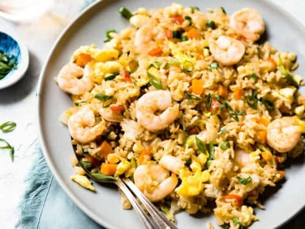

Shrimp Fried Rice

Shrimp fried rice is undoubtly one of the most iconic dish in Chinese-American cuisine. Just imagine a bowl of steaming white rice cooked to just the right consistency, filled with bits of juicy shrimp and vegetables.. It is not surprising that shrimp fried rice is one of America's most popular rice dish! Try creating this popular dish right from home!
Ingredients
You will need the ingredients below in order the create the best shrimp fried rice:
- garlic
- shrimp
- onions
- carrots
- soy sauce
- rice
- oil
Directions
- Put oil in a pan and heat for 1 minute.
- Add a clove of garlic into the pan, followed by the shrimp and stir for 2 minutes.
- Add in the onions and carrots into the pan and continue to stir until the onions are translucent.
- Slowly stir rice into the pan and use more oil so that the rice grains scatter.
- Season the fried rice with soy sauce until the color of rice becomes a light brown.
- Serve your shrimp fried rice on a plate and enjoy!
Checkout More Recipes below: